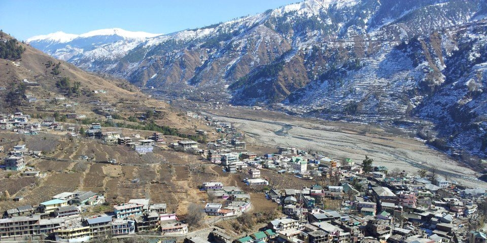
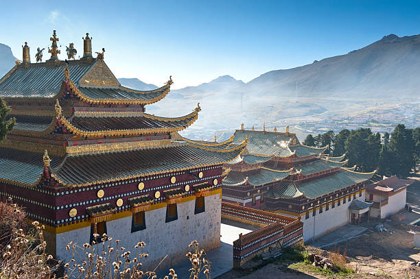

Manali
Himachal Pradesh
About the city Places to visit About food Transportation facility Best time to visit Map
About the city
Manali is a town in the Indian state of Himachal Pradesh. It is situated in the northern end of the Kullu Valley, formed by the Beas River. The town is located in the Kullu district, approximately 270 kilometres north of the state capital of Shimla and 544 kilometres northeast of the national capital of Delhi. With a population of 8,096 people recorded in the 2011 Indian census Manali is the beginning of an ancient trade route through Lahaul and Ladakh, over the Karakoram Pass and onto Yarkand and Hotan in the Tarim Basin of China. Manali is a popular tourist destination in India and serves as the gateway to the Lahaul and Spiti district as well as the city of Leh in Ladakh.
Places to visit
Rohtang pass
Rohtang Pass is a high mountain pass on the eastern end of the Pir Panjal Range of the Himalayas around 51 km from Manali in the Indian state of Himachal Pradesh. It connects the Kullu Valley with the Lahaul and Spiti Valleys of Himachal Pradesh, India.
Solang valley

Solang Valley also known as the 'snow point' is an alluring snow clad utopia near Manali and lies between Solang village and Beas Kund. Situated at an altitude of 8,500 feet above sea level, it offers a spectacular scenery of enchanting glaciers and snow crest mountain peaks.
Hadimba temple

The Hidimba Devi temple was built in 1553 CE by Maharaja Bahadur Singh. ... Born into a Rakshasa family, Hidimba vowed to marry one who would defeat her brother Hidimb, who was supposed to be very brave and fearless. During the Pandava's exile, when they visited Manali; Bhima, one of the five Pandavas, killed Hidimb.
Tibetan Monasteries
Manali is also the home of Tibetan Monasteries and among them, Himalayan Nyingmapa Gompa and Gadhan Thekchhokling Gompa are the most famous. These monasteries are built by Tibetan refugees and are a must visit for anyone wanting to get a glimpse of their culture. The monasteries are built Pagoda style and house a shrine of Lord Buddha.
Great Himalayan National Park

UNESCO World Heritage Site, Great Himalayan National Park is a haven for all nature lovers and wildlife enthusiasts. The flora and fauna here are known for their diversity with the park being home to more than 375 faunal species and many of them are endangered. The biodiversity here is unique in India due to the presence of The Himalayas nearby and therefore this park is governed is strictly. Visitors can also enjoy a scenic views of the nearby valley and mountain passes.
Best time to Visit
October to June is the best time to visit Manali. With bright, colourful flowers in full bloom and a pleasant climate with temperatures ranging between 10 degree Celsius and 25 degree Celsius. December to February is the best time to experience snowfall in Manali.
About Food
The traditional Manali meal includes steamed rice, curry or cooked beaten curd, madra (a curd based dish), pulses, and raita (a mixture made of mustard, dry fruits, and sweet rice). Kulu. Southindian dish made with rice and flour cooked together till it's a paste than mixed with yogurt and salt. You can add onions if you like. Served with murangai leaves and potato, eggplant and dry fish curry.
Transportation Facility

By Air
Kullu Airport which is known as Bhuntar airport is located in Bhuntar, in the state Himachal Pradesh. This airport is considered as a challenging airport for the pilots due to its single runway which is set in a deep valley.

By Rail
Jogindernagar railway station is the nearest railhead to Manali that connects the hill station with several important cities of the country. Chandigarh and Ambala are other options to reach Manali by train. From the railheads, one can get several mode of transportation including taxi and bus at reasonable cost.

By Road
The State Highway 4 that connects the National Highway 21, en route Ambala and Chandigarh is the most reliable route. The distance from Chandigarh to Manali is approximately 310kms.